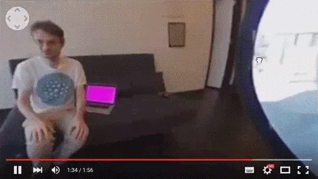
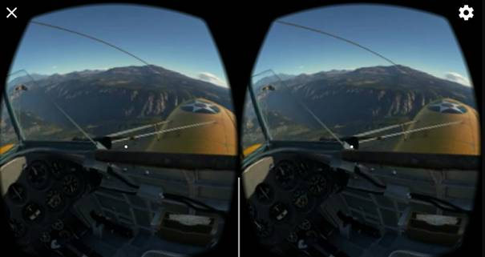
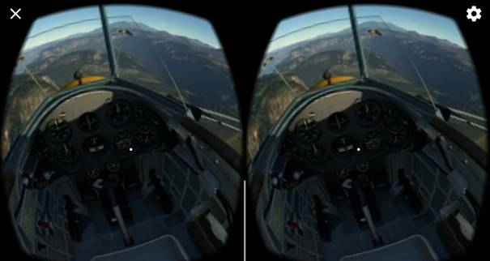

VUFORIA CLOUD RECOGNITION
VIRTUAL REALITY YOUTUBE VIDEO STREAM

In this article we talk about youtube video streaming in Virtual Reality
using Unity3D. There are a lot of 360 degree videos in Youtube and you can
watch these videos using a cardboard VR glasses or the other glasses. We are
going to create an andorid app using an existing project.
We can’t start all over again but we can talk about the
project. Now download the project that already created from here. The project created using
Unity3D 2018.2.14f1. You can download this version of Unity from here or you can
download the unity package that contains the all project from here. Ok I think you downloaded
the project or the package. Open the project or import the package.
Now lets talk about basic thing and then read and write some codes. In
this project we used Google Cardborad VR SDK to contol the player/phone. Open
Assets > Scenes > MainMenu, if it is not opened. This scene is not VR if you want to make VR
this scene too, set active or delete the “OffVR” gameobject that is in the hierarchy.
This game object close the VR setting that makes normal camera to VR camera.
There is a Main Camera, a Directional Light, an Event System and a Canvas. In
this Canvas there is a input field that we will write the link at here and a button to start/load the
video. Ok this scene basicly like this.
Now open Assets > Scenes > VideoStreaming. There are basic things
in this scene too like a directional light. There is a Player game object to
contoll the camera and display the GvrReticlePointer. There is a GvrEditorEmulator
to contoll the player and pointer in the editor mode. There is also a
GvrEventSystem. And last thing is OnVr game object. This game object open the
VR setting that is closed in MainMenu scene. If you didnt close the VR setting,
you can delete or set deactive this object. Yeah that is it. It looks so simple,
right? Now lets read the codes to understand how it works.
Understand how it works
1-
Get
the link of youtube video using a input field (like :
https://www.youtube.com/watch?v=lnh53i6RqQc
)
2-
Click
the button to set the link and open the other scene (VideoStreaming)
3-
(Opened
VideoStreamin scene) Get the link. Create a connection.
4-
Get
the video using videoPlayer.
5-
Set
the texture with video. Show the video 360 degree usign render texture.
To understand how it work lets look scripts are used in the project. Open
the MainMenu scene (Assets > Scenes > MainMenu). In this scene, Main Camera and Canvas has
scripts to contoller the camera and pointer. These scripts are came with Google
VR SDK. You don’t have to understand
what they are for. Gyro Camera is for sensivity or smoothing the camera and Gvr
Pointer Graphic Raycaster is for raycast of pointer. If you don’t want to use
VR in this scene (this means you didn’t delete or disable the OffVR game
object), dont worry about these script. These are for VR. Input
field has script to set the link that will used in the VideoStreaming scene. Name of this script is “Store Input Stream Url”.
void Start ()
{
inputField = gameObject.GetComponent ();
inputField.onEndEdit.AddListener(StoreUrlAndChangeScene)
}
public void StoreUrlAndChangeScene(string stringInputByUser)
{
if (stringInputByUser == null && stringInputByUser == "")
{
stringInputByUser = inputField.text;
}
StreamUrl.UserInputUrl = stringInputByUser;
SceneManager.LoadScene ("VideoStreaming");
}
There are two method in this class. First of them is Start. In this start
method, we set the input field and add a listener to this input field. In the
Store UrlAndChangeScene method, first we
check the link whether it is null or empty. This method takes a parameter is
called “stringInputByUser”. We are going
to use this string at other scene So we set
StreamUrl.userInputUrl with this string. How can we access the string in
the StreamUrl? Beacuse this string is static. And then we load the “VideoStreaming”
scene using SceneManager. But when is this
method called? The answer is in the PlayButton. If you look Button Component of
PlayButton, you will see the event. If user click this button, the StoreUrlAndChangeScene
method will called.
And OffVR game object has a script is called “OffVR”.
void Start()
{
StartCoroutine(LoadDevice("", false));
}
IEnumerator LoadDevice(string newDevice, bool enable)
{
XRSettings.LoadDeviceByName(newDevice);
yield return null;
XRSettings.enabled = enable;
}
In the Start method we start the LoadDevice coroutine . This coroutine takes
two parameter. A string and a boolean. The string is for which devices will
load and the bool is for open-close XRSettings. We will use same method to open
VR by sending “CardBoard” string like parameter. That is it.
Now let’s look into VideoStreaming
scene. “LiveVideoStream” object has a LiveVideoStream script. And this script
has three method. First of all is GetVideoUrl.
private string GetVideoUrl()
{
var yt = new YoutubeUrlExtractor();
var links = yt.Extract(StreamUrl.UserInputUrl);
var url = string.Empty;
foreach (var link in links)
{
var acquiredStream = false;
if (!link[0].Equals(string.Empty) && link[1].Contains("hd720"))
{
acquiredStream = true;
}
if (!link[0].Equals(string.Empty) && link[1].Contains("medium"))
{
acquiredStream = true;
}
if (!link[0].Equals(string.Empty) && link[1].Contains("small"))
{
acquiredStream = true;
}
if(acquiredStream)
{
url = link [0];
print ("Stream acquired:\n");
print ("Quality: " + link [1] + "\n");
print (link [0]);
break;
}
}
return url;
}
}
In this method, first it gets the link from StreamUrl class. If you
remember, we set this string in MainMenu scene using and input filed. And then it redesign the string/link using
YoutubeUrlExtractor. And last thing is determining the quality of video. As you
see, there are three quality option hd, medium, small. This quality is added to
link to create a url. And it returns the url.
Start method gets the url from GetVideoUrl method and starts the
coroutine of StreamVideo. This coroutine is like this :
IEnumerator StreamVideo()
{
videoPlayer = gameObject.AddComponent();
videoPlayer.playOnAwake = false;
videoPlayer.source = VideoSource.Url;
videoPlayer.url = videoUrl;
videoPlayer.Prepare();
while (!videoPlayer.isPrepared)
{
yield return null;
}
print ("Stream Loaded. Ready to play.");
videoPlayer.targetTexture = RenderTexture;
videoPlayer.Play();
yield return null;
}
This coroutine is set the url of VideoPlayer using the videoUrl ( It is
changed at the Start using GetVideoUrl). And then it sets the targetTexture of
the videoPlayer and plays the video of videoPlayer.
Maybe you say “That is ok. It
takes the video and play the video but how can we see this video 360 degree?”
You are right. That is the trick of this project. We created a material (LiveVideoMaterial)
that has Skybox/Panoramic shader. This shader takes a render texture (Spherical
(HDR)). We used LiveVideoRenderTexture for this texture. And then we set the
skybox material to this material (Lighting Settings > Skybox Material). VideoPlayer gets the video and set it to the render
texture. The material (LiveVideoMaterial) and texture (LiveVideoRenderTexture) are
in the Assets folder.
GvrEditorEmulator is to contoll the player in the editor. And
GvrEventSystem is for the ponter events.
The last thing is OnVr game object. This obejct has OnVr script:
void Start()
{
StartCoroutine(LoadDevice("Cardboard", true));
}
IEnumerator LoadDevice(string newDevice, bool enable)
{
XRSettings.LoadDeviceByName(newDevice);
yield return null;
XRSettings.enabled = enable;
}
This script has two method like OffVr script. Start method starts
coroutine of LoadDevice. This coroutine take two parameter; a string for the
devices and a boolean to open-close. XRSettings loads the devices using the
string and sets the XRSettings enable toggle using the boolean.
Important things:
· The link what you want to use must be a youtube 360 degree video link like:
https://www.youtube.com/watch?v=lnh53i6RqQc

